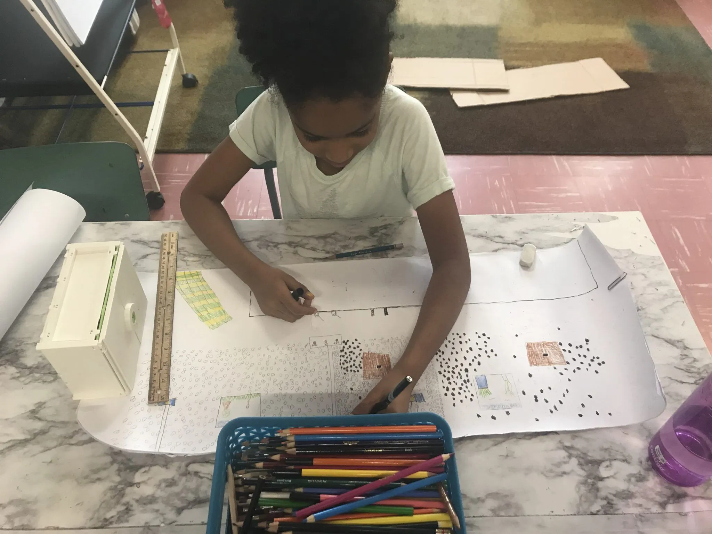
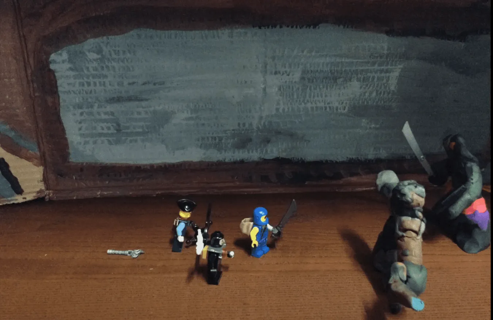
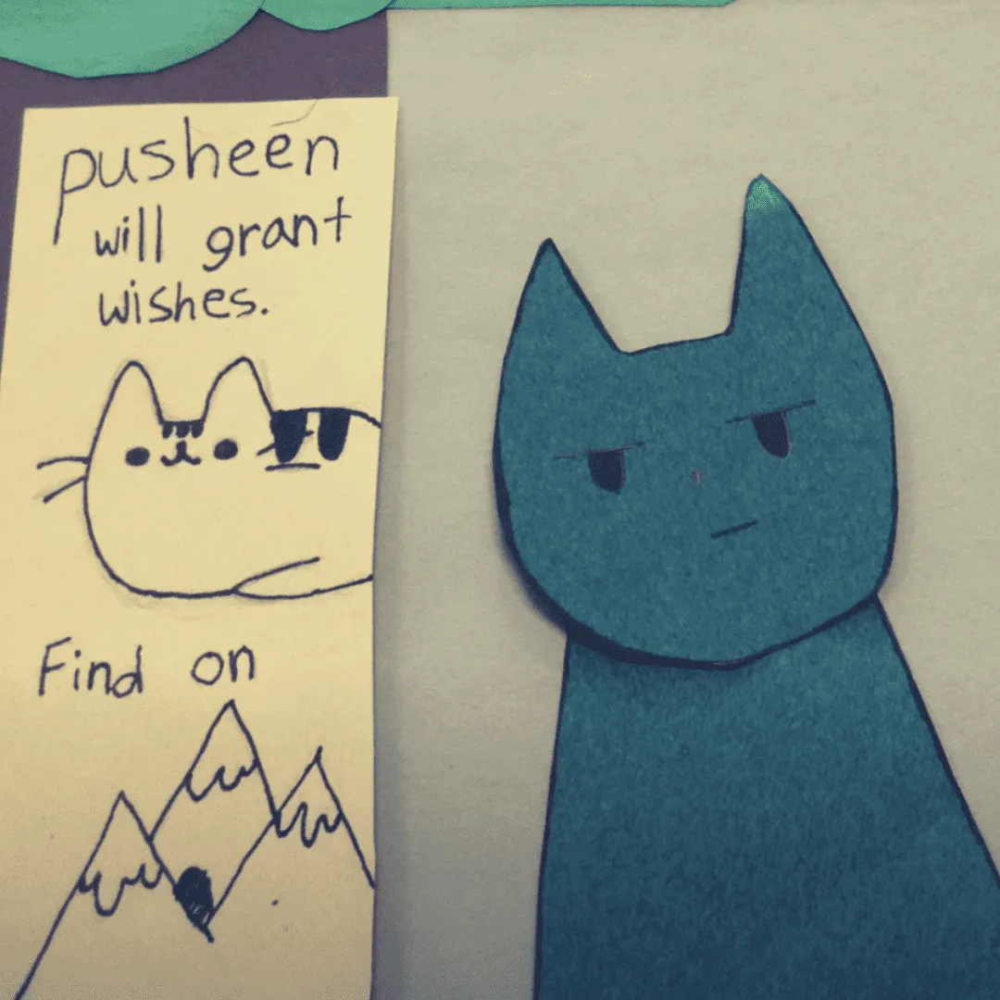

Set, Prop & Character Design 🧱
Build your characters and scenes using clay, paper, recycled items, or toys. Cardboard backdrops, LEGO and markers all work.
- Try to reuse and recycle—boxes, fabric scraps, and bottle caps make great props.
- Test your setup: Can your characters stand and be moved slightly without falling?
- Make sure your background won’t distract from the action.
Example Images:

Filming 🎥

Open Stop Motion Studio and capture your story one photo at a time.
- Use a tripod or books to keep your camera steady.
- Take 8–12 photos for every second of animation.
- Tap gently to avoid moving your setup accidentally.
Try to keep your lighting consistent. Use lamps or natural light and avoid casting shadows.
Watch this example for inspiration:
Voiceovers & Sound Effects 🎙️
Add voice acting and sound effects to your film.
- Write a script for each character—then practice reading with emotion.
- Record in a quiet space; keep your mouth near the mic without bumping it.
- Re-record as needed if there’s background noise or mistakes.
Sound FX ideas:
- Rustling leaves = crumpling paper
- Thunder = shaking a cookie sheet
- Footsteps = tapping your fingers on a table
You may also add background music using royalty-free sites or soundtracks built into iMovie or Stop Motion Studio Pro.
